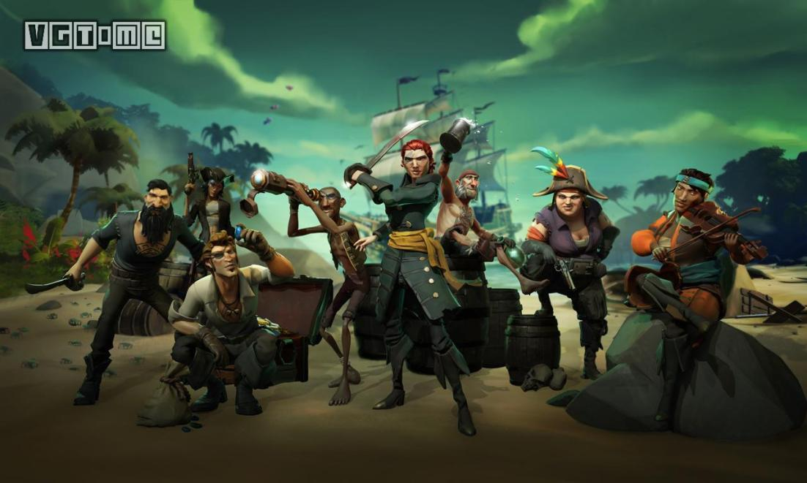
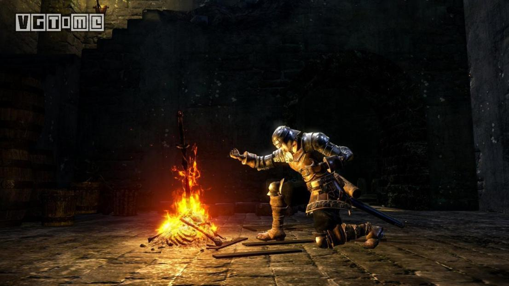

产品背景
XBOX ONE，是微软发售的家用游戏机。是Xbox 360的下一代机种。简称为XONE、XB-ONE。

Xbox ONE的主要目标是“创造一个生动的娱乐体验”。基于这个创意，微软推出了XboxONE游戏平台，提供给用户独特的娱乐体验，更多的是注重他们个性化的游戏喜好和游戏风格而不是游戏本身。将用户做为整个娱乐体验的中心，一切的设计和服务都是以他们为本。
从很多层面来看，Xbox One 的揭露象征Microsoft 跨入次世代的平台的第一步，该主机最早是在2013 年5 月21 日由当时的微软互动娱乐（Microsoft'sInteractive Entertainment Business）部门总裁Don Mattrick（上图）亲自发表。其名称「Xbox One」是取自游戏、电视、电影等多项功能整合进一台主机，All In One 的概念，同时官方也公布了新一代的 Kinect 体感。
配置规格
XBOX One主机配置参数：
| 主处理器 | 8核x86 AMD Jaguar架构APU 1.75GHz主频 |
| 记忆体 | 8GB DDR3 带宽 63.8 GB/s 32MB ESRAM 带宽 109 GB/s |
| 硬盘 | 内置500GB |
| 光学媒体 | Blu-Ray Disc/蓝光/DVD |
| 输出╱输入 | HDMI in/out 多个USB 3.0 |
| 通讯 | 802.11N with WIFI-Direct/支持WIFI直连 |
XBOX One Kinect以及手柄参数：
| 摄像头分辨率 | 分辨率最大支持1080P |
| 帧速率 | 30fps |
| 感应器 | 250,000像素红外探深感应器 |
| 手柄电池 | 内置锂电池 |
| 接口 | 无线接口、耳机、麦克风 |
| 按键 | 改良版十字键 |

Xbox One支持Netflix、亚马逊等流媒体服务的4K视频播放，这款游戏机还内置4K超高清蓝光，Xbox One S售价与目前市场上一些专用超高清播放器的价格相比，相对便宜，这对目前拥有4K电视的个人来说是一笔可观的购买，上一代Xbox One接受普通蓝光光盘，但无法处理超高清蓝光或4K流媒体。虽然Xbox One和Xbox One S都是在1080p的水平上玩游戏，但如果你有一台4K电视，Xbox One S可以把游戏升级到4K分辨率，这比1080p或720p的画质要好，不过比不上4K的画质，得益于2018年4月的升级，Xbox One S还能以1440p的分辨率玩游戏。
Xbox One S还支持HDR，即高动态范围，这大大拓宽了显示颜色和对比度的范围，更深的色彩和更丰富的对比意味着更有活力和现实的意象，最初的Xbox One不支持HDR用于游戏或视频播放。HDR升级可以提供生动的游戏体验，但您必须拥有一台支持HDR的电视，尽管如此，还是有很多游戏加入了这一功能，尤其是微软的第一代游戏，像《刺客信条奥德赛》、《Forza Horizon 4》、《古墓丽影》和《使命召唤:黑色行动4》等游戏都支持HDR。
游戏阵容
自从 Xbox One X 主机和 Xbox Game Pass 服务推出以来，有越来越多的玩家加入了 Xbox 的大家庭中。大量优质的游戏与服务，让很多人能够用一台主机体验更多的游戏作品。Xbox One X 是目前市面上性能最为强劲的游戏主机，也就使得一些跨平台游戏在 Xbox One X 上的表现更为优秀。如果你在这个游戏淡季没有较好的选择的话，不妨来跟随我们的推荐一起体验你还没有试过的作品哦。
-盗贼之海-
作为微软上半年独占游戏中的重头戏之一，《盗贼之海》没有辜负玩家对它的期望。在发售的48小时之内游戏的玩家人数就突破了100万大关，以至于服务器差点承受不住压力而崩溃。本作也成为了微软本世代“卖得最快的第一方新 IP”（不包含 XGP 带来的玩家）。

作为一款以多人合作探索对战为卖点的游戏，《盗贼之海》做到了优秀，和朋友一起航海寻宝、攻克要塞、畅饮开怀，也会和其他海盗战斗。在内容的设计上，《盗贼之海》照顾到了方方面面。不过也有玩家表示游戏的内容还是不够丰富，Rare 自然也意识到了这个问题，他们在最近这几个月内不断为游戏添加新的东西。“饥饿深渊”DLC 已在5月末上线，新的两个追加内容也在路上，现在就是你加入海盗团的最佳时机了。
另外，如果你是 Xbox Game Pass 的订阅用户，可以直接免费获得《盗贼之海》，并在服务期内直接下载游玩。
-腐烂国度2-
得益于独特的末日生存内容，《腐烂国度2》成为市面上少见的拥有丰富成熟的基地与角色系统的僵尸游戏。优秀的 PvE 生存内容，理想的多人合作系统，让游戏的可玩性处于很高的位置。
就本身30美元的价格而言，《腐烂国度2》的内容已经非常超值了。它的核心体验便是关于“丧尸生存”这一主题的一切内容。从这个角度讲，《腐烂国度2》带给玩家的体验是绝对丰富且多样的。
-孤岛惊魂5-
为什么要在 Xbox One 的游戏推荐里加上《孤岛惊魂5》，想必各位心中应该已经有了答案。在画面的表现上，Xbox One X 效果是最好的，分辨率达到了原生 4K - 3840x2160，相比 PS4 Pro 的 2880x1620 要高了不少，并且读取时间也要比其他主机平台的版本要快上至少4秒左右，帧数也能保证稳定30。
《孤岛惊魂5》本身的素质在上半年的跨平台游戏中名列前茅，在 MetaCritic 平台上 Xbox One 版的平均媒体评分高达82分，比其他平台版本都要高上几分。本作还打破了英国地区系列销售纪录，全球地区的销售额突破了3.1亿美元，成为了育碧史上第二成功的游戏，甚至终结了《绝地求生》在 Steam 平台55连冠。
如果说上半年有哪一款跨平台游戏最值得各位体验，当属《孤岛惊魂5》。
-黑暗之魂 重制版-
《黑暗之魂》这款游戏并不能推荐给所有玩家，它在很多机制的设计上确实会为难很多动作游戏苦手，但是重制后的《黑暗之魂 重制版》依旧是我上半年推荐给各位 Xbox One 玩家的一款游戏。

且不说游戏的品质如何，光从平台表现来看，Xbox One X 就优秀了一大截。根据 Digital Foundry 的测试，虽然 PS4 Pro 和 Xbox One X 的分辨率相同，但是 Xbox One X 平台的运行帧率更加稳定，它也是唯一一个能够在所有场景中都维持稳定60帧的平台。最明显的例子就是与巨狼希夫的 BOSS 战，PS4 Pro 掉到了44帧，而 Xbox One X 版依旧稳定60帧。
-拆线红偶2-
《拆线红偶2》是平台解谜游戏《拆线红偶》的续作，本作在初代的基础上新增了双人模式。玩家需要通过身上的“毛线”跟场景互动，与朋友建立羁绊，穿越重重险阻并达到终点。如果你是一个人，也可以进行单人模式，两团毛线将会绑在一起，从而变成独立的个体。该作延续了初代的艺术风格和游戏设计，场景设计灵感来源于真实的斯堪地那维亚地区。
-火爆狂飙 天堂 重制版-
《火爆狂飙 天堂 重制版》是《火爆狂飙 天堂》的重制版，本次的重制版将游戏的画面和图形效果进行了全方位的提升，除了将以原生 1080P 在 PS4 和 Xbox One 上运行外，还在 PS4 Pro 和 Xbox One X 上提供4K 60帧的画面选项。此次的重制版将收录原版游戏的8个 DLC，包括车辆、地图、挑战等。
和塞尔达一样，游民星空、IGN、A9VG、VGtime、网易爱玩、GameSpot、Gamersradar都给了满分评价。